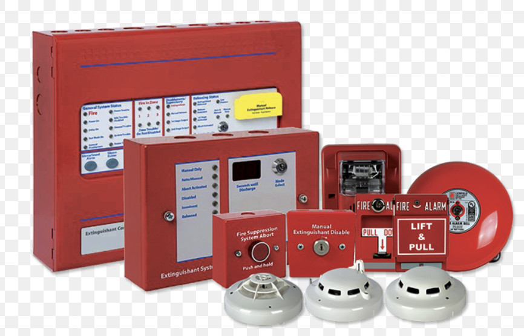

Intelligent fire and gas detection panels with redundant control logic for safe, reliable plant operations.
Request a QuoteDOOIL provides fully integrated Fire & Gas (F&G) detection system packages — from standalone addressable fire alarm control panels to plant-wide F&G Safety Systems with SIL 2/3 rated controllers, including point and open-path gas detectors, flame detectors, and smoke & heat detectors.
Our systems are engineered to IEC 61511 and NFPA 72 standards and are compatible with leading SCADA/DCS platforms via Modbus, HART, and Foundation Fieldbus.

| Parameter | Range / Options |
|---|---|
| Panel Type | Addressable FACP, Conventional, F&G Safety System (SIL) |
| SIL Rating | SIL 2 / SIL 3 (IEC 61508/61511) |
| Loop Capacity | Up to 2,048 addressable points |
| Gas Detector Types | Fixed Point (Catalytic, Electrochemical, IR), Open-Path IR, Ultrasonic |
| Flame Detector Types | UV, IR (Single/Dual/Triple), UV/IR Multi-Spectrum |
| Hazardous Area Rating | ATEX / IECEx Zone 1 & Zone 2 |
| Target Gases | HC (Flammable), H₂S, CO, CO₂, O₂ Depletion, Toxic |
| Communication | Modbus RTU/TCP, HART, Foundation Fieldbus |
| Certifications | UL, FM, ATEX, IECEx, SIL 2/3, NFPA 72 |
Plant-wide F&G systems for hazardous process areas.
ATEX-rated, SIL 2/3 F&G systems across platform decks.
Turbine hall H₂ detection and transformer room fire alarms.
Catalytic gas detectors for pipeline compressor stations.
Open-path IR and UV/IR flame detection for cryogenic areas.
Addressable FACP with smoke/CO detectors per NFPA 72.
From single-panel systems to SIL-rated plant-wide F&G architectures — our specialists design and supply the right solution.